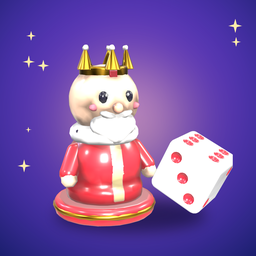

Ludo RoyalePrivacy Policy
Last updated: October 21, 2026
The short version: Ludo Royale has no ads, no analytics and no tracking, and we never sell your data. You can play offline without an account. When you use the online features (online matches, friends, clubs, leagues, the Royal Cup), the app creates a game account for you — no email or phone number needed — and our server keeps your profile, your friends and clubs, and a backup of your progress so those features work. You can delete the account and its data at any time in Settings → Account → Delete account.
Who we are
Ludo Royale ("the app") is made by Gain Ovuta ("we", "us"). If you have any question about this policy, contact us at emperorduke5@gmail.com.
Information stored on your device
The app saves your settings, coins, gems, levels, collection, album, statistics and display name on your device, along with a random player ID it creates the first time it runs and the transaction identifiers of your purchases (so a purchase is never credited twice). If you have a game account, its access key is kept in the iOS Keychain so the account still works if you reinstall the app.
Your game account (online features)
The first time you play online or open Friends, Clubs, League, the Royal Cup or the account backup in Settings, the app creates a game account on our server. Our server then stores:
- your account ID, your friend code, and the display name, avatar, frame and level you show to other players;
- a backup of your game progress, settings and statistics, so you can restore it on a new phone;
- your friends, friend requests, the players you have blocked, the last 30 players you met online, rewards and invitations waiting in your inbox, and a record of daily gifts sent;
- your league points, tier and weekly results, and your tournament results;
- the club you belong to, your role in it, and the messages you post in club chat (each club keeps its latest 500 messages);
- who invited you to the game and how many friends you have invited, to pay invitation rewards;
- reports you send about other players, including the text of a reported message, which we use only to review the report;
- when you last used the online features, to show your friends whether you are online and to run the weekly leagues.
We use this information only to provide these features and keep them safe. We don't use it for advertising and we don't sell or rent it to anyone.
Sign in with Apple (optional)
You can link your game account to Sign in with Apple to back it up and restore it on another device. We don't ask for your name or email address; we receive and store only the anonymous identifier Apple gives our app for your Apple Account.
Online matches, chat and voice
During an online match the app sends your game actions (dice rolls and moves) and any gifts, quick-chat phrases or emoji you send, so the other players at your table can see them. In club chat, the messages you post are shown to the members of your club; names and messages pass through automatic filters that hide profanity, links and contact details.
In private rooms with friends you can send short voice clips. A clip is recorded only while you hold the talk button, is sent through our server to the other players in that room, and is played on their devices. Our server does not store voice clips. The app asks for microphone access the first time you use this; you can turn access off at any time in the iOS Settings app.
What other players can see
- Your display name, avatar, frame and level, at your table, in your club, in league standings and in your friends' lists.
- Your friend code, if you share it or an invitation link.
- Whether you are online, to your friends.
- Your club chat messages, to your club's members, and your voice clips, to the players in your private room.
Service providers
Our game server and its database run on Cloudflare, which processes network information such as IP addresses to deliver the connection. This website and the small event calendar file the app downloads are hosted on GitHub Pages, which also sees IP addresses. Apple provides purchases, subscriptions, Game Center and Sign in with Apple under Apple's privacy policy. The app contains no advertising or analytics software.
Game Center and notifications
If you use Game Center, the app reports your scores and achievements to Apple's Game Center; our server doesn't receive your Game Center identity. Reminders are local notifications scheduled on your device only, and only if you turn them on. If you allow notifications and keep "Friend notifications" on in Settings, we store a push token for your device (with your app language) so we can tell you about friend requests, invitations and gifts while the game is closed. Notifications are delivered through Expo's push service and Apple Push Notification service; they contain only the friend's display name and the kind of event. Turning the setting off, or deleting your account, deletes the token.
Purchases and the Royal Club subscription
In-app purchases and the Royal Club subscription are processed by Apple. We never see your payment details. Whether your subscription is active is read from Apple on your device.
Children
The app is not directed at children under 13, and we do not knowingly collect personal information from children. Club chat and display names are filtered automatically, and every player can report or block others. If you believe a child has created an account, contact us and we will delete it.
How long we keep information
Account information is kept for as long as your account exists. When you delete your account in the app, we delete it from our database straight away, together with your progress backup, friends, blocks, inbox, league records, club membership, your club messages, push tokens and the reports you sent. Reports that other players sent about your account may be kept to protect the community. Information stored only on your device is removed when you delete the app.
Your choices and rights
- You can play entirely offline without creating an account.
- You can change your display name at any time in your Profile.
- You can delete your account and its data at any time in Settings → Account → Delete account, or by emailing us.
- Depending on where you live, you may have the right to access, correct or delete your information, or to object to how we use it. Email us and we will respond within 30 days. We use your information because it is needed to provide the features you choose and, for reports and filters, because of our legitimate interest in keeping the game safe.
Changes to this policy
If we change this policy, we will update this page and the date above. Significant changes will also be noted in the app's release notes.